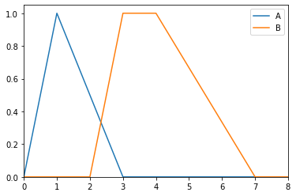
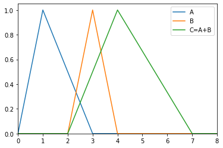
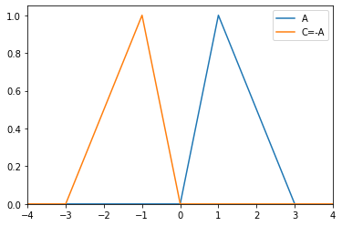
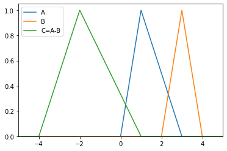

LR¶
- class floulib.LR(*args, label='', color=None)¶
Bases:
MultilinearContains various methods to perform operations on LR fuzzy intervals.
Note
LR is a subclass of
Multilinear, therefore all methods inMultilinearmay be used.Multilinear is a subclass of
Plot, therefore all methods inPlotmay also be used.- __init__(*args, label='', color=None)¶
Constructor
- Parameters:
*args (float) –
With four positional arguments, the LR fuzzy interval is trapezoidal
args[0] is m
args[1] is m_prime
args[2] is a
args[3] is b
With three positional arguments, the LR fuzzy interal is triangular
args[0] is m
args[1] is a
args[2] is b
label (str, optional) – Label associated with the LR fuzzy interval. The default is ‘’.
color (matplotlib.colors, optional) – Color associated with the LR fuzzy interval. The default is None.
- Raises:
Exception – Raised if the number of positional arguments is not 3 or 4.
- Return type:
None.
Example
>>> from floulib import LR >>> A = LR(1,1,2, label='A') >>> B = LR(3,4,1,3, label='B') >>> A.plot(xlim=[0,8]).add_plot(B)
- area()¶
Area of a LR fuzzy interval.
- Returns:
Area of the LR fuzzy interval.
- Return type:
float
Example
>>> from floulib import LR >>> A = LR(1, 0.5, 1) >>> B = Trapezoid (0.5, 1, 2, 4) >>> print(f'Area: A = {A.area():.3f}, B = {B.area():.3f}') Area: A = 0.750, B = 2.250
- centroid()¶
Centroid of a LR fuzzy interval.
- Returns:
Centroid of the LR fuzzy interval.
- Return type:
float
Example
>>> from floulib import LR >>> A = LR(1, 0.5, 1) >>> B = Trapezoid (0.5, 1, 2, 4) >>> print(f'Centroid: A = {A.centroid():.3f}, B = {B.centroid():.3f}') Centroid: A = 1.167, B = 1.944
- is_precise()¶
Returns True if the LR fuzzy interval is precise.
- Return type:
boolean
Example
>>> from floulib import LR >>> A = LR(1, 0.5, 1) >>> B = LR(1, 0, 0) >>> print(A.is_precise(), B.is_precise()) False True
- membership(x)¶
Computes the grade of membership of a point x to the LR fuzzy interval.
- Parameters:
x (float) – The point x.
- Returns:
y – The grade of membership.
- Return type:
float
Example
>>> from floulib import LR >>> A = LR(1, 0.5, 1) >>> print(f'Grade of membership for x = 1.2 is {A.membership(1.2):.2f}') Grade of membership for x = 1.2 is 0.80
- mode()¶
Mode of a LR fuzzy number.
- Returns:
Mean of m and m_prime.
- Return type:
float
Example
>>> from floulib import LR >>> A = LR(1, 0.5, 1) >>> B = Trapezoid (0.5, 1, 2, 4) >>> print(f'Mode: A = {A.mode():.3f}, B = {B.mode():.3f}') Mode: A = 1.000, B = 1.500
- __add__(other)¶
Implements + operator between two LR fuzzy intervals.
- Parameters:
other (LR) – LR fuzzy interval to add.
- Raises:
TypeError – Raised if the RHS operand is not an instance of
LR.- Returns:
Addition of the two LR fuzzy intervals.
- Return type:
Example
>>> from floulib import LR >>> A = LR(1,1,2, label = 'A') >>> B = LR(3,1,1, label = 'B') >>> C = (A+B).label('C=A+B') >>> A.plot(xlim=[0,8]).add_plot(B).add_plot(C)
- __neg__()¶
Implements - unary operator of a LR fuzzy interval.
- Returns:
Opposite of a LR fuzzy interval.
- Return type:
Example
>>> from floulib import LR >>> A = LR(1,1,2, label = 'A') >>> C = (-A).label('C=-A') >>> A.plot(xlim=[-4,4]).add_plot(C)
- __sub__(other)¶
Implements - operator between two LR fuzzy intervals.
- Parameters:
other (LR) – LR fuzzy interval to substract.
- Raises:
TypeError – Raised if the RHS operand is not an instance of
LR.- Returns:
Difference of the two LR fuzzy intervals.
- Return type:
Example
>>> from floulib import LR >>> A = LR(1,1,2, label = 'A') >>> B = LR(3,1,1, label = 'B') >>> C = (A-B).label('C=A-B') >>> A.plot(xlim=[-5,5]).add_plot(B).add_plot(C)
- __str__()¶
Special method for printable string representation.
- Returns:
Printable string.
- Return type:
str
Example
>>> from floulib import LR >>> A = LR(1,1,2) >>> B = LR(3,4,1,3) >>> print(A+B) LR(4.00, 5.00, 2.00, 5.00)